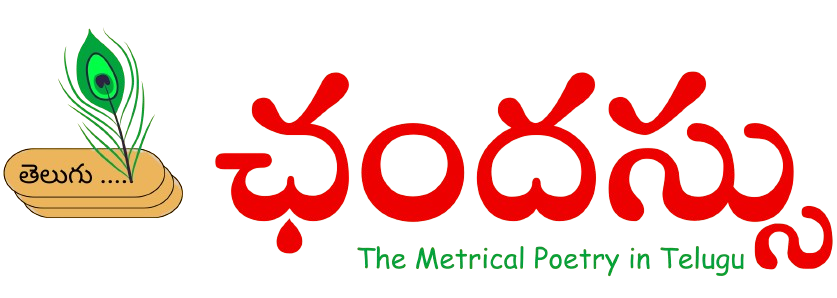

<!DOCTYPE html>
<html lang="en">

<head>
  <meta charset="UTF-8" />
  <meta name="viewport" content="width=device-width, initial-scale=1" />
  <title>KitikiPlot Documentation</title>
  <!-- Font Awesome for icons -->
  <link href="https://cdnjs.cloudflare.com/ajax/libs/font-awesome/6.4.0/css/all.min.css" rel="stylesheet" />
  <!-- Prism.js CSS for dark theme -->
  <link href="https://cdn.jsdelivr.net/npm/prismjs@1.29.0/themes/prism.css" rel="stylesheet" />
  <!-- Prism.js core -->
  <script src="https://cdn.jsdelivr.net/npm/prismjs@1.29.0/prism.js"></script>
  <!-- Prism.js Python language support -->
  <script src="https://cdn.jsdelivr.net/npm/prismjs@1.29.0/components/prism-python.min.js"></script>
  <link rel="stylesheet" href="https://cdnjs.cloudflare.com/ajax/libs/font-awesome/6.4.0/css/all.min.css" />
  <link rel="icon" type="image/png" href="assets/logo.png">

  <style>
    /* Reset */
    * {
      box-sizing: border-box;
    }

    body,
    html {
      margin: 0;
      height: 100vh;
      font-family: "Segoe UI", Tahoma, Geneva, Verdana, sans-serif;
      background: #f9f9f9;
      color: #222;
      overflow: hidden;
    }

    a {
      color: inherit;
      text-decoration: none;
      cursor: pointer;
    }

    /* Layout */
    .container {
      display: flex;
      height: 100vh;
      overflow: hidden;
    }

    /* Sidebar (left) */
    .sidebar {
      width: 20%;
      background: #dce4e5;
      color: #0066ff;
      /* light gray */
      display: flex;
      flex-direction: column;
      padding: 1rem 0.8rem;
      overflow-y: auto;
      scrollbar-width: thin;
      scrollbar-color: #d6d6d6 #f6f6f6;
      user-select: none;
    }

    /* Custom scrollbar for webkit */
    .sidebar::-webkit-scrollbar {
      width: 8px;
    }

    .sidebar::-webkit-scrollbar-track {
      background: #ff0000;
    }

    .sidebar::-webkit-scrollbar-thumb {
      background-color: #4ade80;
      /* lime green */
      border-radius: 4px;
    }

    /* Sidebar Top: Logo + Title */
    .sidebar-top {
      text-align: center;
      margin-bottom: 1rem;
      border-bottom: 3px solid #22c55e;
      padding-bottom: 1.5rem;
      padding-top: 1rem;
    }

    .sidebar-top img {
      width: 64px;
      height: 64px;
      object-fit: contain;
      margin-bottom: 0.3rem;
    }

    .sidebar-top h1 {
      margin: 0;
      font-size: 1.2rem;
      font-weight: 700;
      color: #a7f3d0;
      /* pale lime */
    }

    /* Navigation */
    nav {
      flex: 1;
      overflow-y: auto;
      padding-right: 0.3rem;
    }

    /* Section heading in sidebar */
    .nav-section {
      font-weight: normal;
      font-size: 1rem;
      color: #000000;
      /* lime */
      padding: 0.5rem 0.4rem 0.3rem 0.4rem;
      cursor: pointer;
      display: flex;
      justify-content: space-between;
      align-items: center;
      user-select: none;
      border-radius: 4px;
    }

    .nav-section:hover {
      background-color: #ffde59;
      /* darker green */
    }

    .nav-section.collapsed .fa-chevron-down {
      transform: rotate(-90deg);
      transition: transform 0.3s ease;
    }

    .nav-section .fa-chevron-down {
      transition: transform 0.3s ease;
      color: #000000;
    }

    .nav-items {
      list-style: none;
      margin: 0 0 1rem 0;
      padding-left: 1rem;
      max-height: none;
      /* remove height limit */
      overflow: visible;
      /* allow content to expand */
      transition: opacity 0.5s ease;
      opacity: 1;
    }


    .nav-items.collapsed {
      max-height: 0;
      opacity: 0;
      padding-left: 1rem;
      margin-bottom: 0;
      overflow: hidden;
    }


    /* Nav link */
    .nav-item {
      font-size: 1rem;
      /* Increased font size */
      font-weight: normal;
      /* Makes the text not bold */
      line-height: 1.4;
      padding: 0.2rem 0.5rem;
      border-radius: 3px;
      color: #000000;
      display: flex;
      align-items: center;
      gap: 0.3rem;
      cursor: pointer;
      user-select: none;
    }

    .nav-item:hover {
      background-color: #ffde59;
      color: #000000;
    }

    .nav-item.active {
      background-color: #ffde59;
      /* lime-500 */
      color: #1f2937;
      /* dark bg for contrast */
      font-weight: normal;
      box-shadow: inset 3px 0 0 0 #15803d;
    }

    .nav-item i {
      width: 16px;
      text-align: center;
      color: #86efac;
      /* lighter lime */
      flex-shrink: 0;
      display: none;
    }

    .nav-section.direct-link.active {
      background-color: #ffde59;
      color: #1f2937;
      font-weight: normal;
      box-shadow: inset 3px 0 0 0 #15803d;
    }

    /* Content area (right) */
    .content {
      width: 80%;
      background: #fff;
      padding: 2rem 3rem;
      overflow-y: auto;
      box-shadow: inset 0 0 20px rgb(0 0 0 / 0.03);
    }

    /* Content heading */
    .content h2 {
      font-size: 2rem;
      font-weight: 700;
      margin: 0;
      margin-bottom: 0.3rem;
      color: #000000;
    }

    .content hr {
      border: none;
      height: 3px;
      background: linear-gradient(to right, #22c55e, #4ade80);
      width: 100px;
      margin: 0 0 1.5rem 0;
      border-radius: 3px;
    }

    /* Content paragraphs */
    .content p {
      font-size: 1rem;
      line-height: 1.6;
      margin-bottom: 1rem;
      color: #374151;
    }

    /* Code block */
    pre {
      background-color: #afafaf88;
      /* translucent lime */
      padding: 0.9rem 0.5rem;
      border-radius: 8px;
      font-family: 'Source Code Pro', monospace, monospace;
      font-size: 1rem;
      position: relative;
      overflow-x: auto;
      user-select: text;
    }

    pre[class*="language-"] {
      background: #f7f7f7 !important;
      border: 1px solid rgba(0, 0, 0, 0.2);
      /* thin black border */
      border-left: 4px solid #22c55e;
      /* optional: keep accent stripe */
      font-family: Consolas, 'Courier New', monospace;
      font-size: 0.9rem;
      color: #000;
      padding: 0.6rem 1rem;
      border-radius: 6px;
      line-height: 1.3;
      box-shadow: 0 1px 2px rgba(0, 0, 0, 0.05);
      margin: 0.5rem 0;
    }

    pre[class*="language-"] code {
      background: transparent !important;
      color: inherit !important;
      padding: 0 !important;
      /* ⬅ remove internal padding */
      margin: 0 !important;
      display: block;
      /* ensures it doesn't add vertical space inline */
    }

    /* Copy button */
    .copy-btn {
      position: absolute;
      top: 8px;
      right: 8px;
      background: #2d834c;
      border: none;
      color: white;
      padding: 0.3rem 0.6rem;
      font-size: 0.8rem;
      border-radius: 5px;
      cursor: pointer;
      opacity: 0.8;
      transition: opacity 0.3s ease;
    }

    .copy-btn:hover {
      opacity: 1;
    }

    /* Output image */
    .output-img {
      display: block;
      margin: 1.5rem auto;
      max-width: 100%;
    }

    /* Useful Links */
    .useful-links {
      margin-top: 2rem;
      border-top: 1px solid #4ade80;
      padding-top: 1rem;
    }

    .useful-links .nav-item {
      font-weight: 600;
      font-size: 0.85rem;
    }

.kitikiplot-shine {
  position: relative;
  display: inline-block;
  font-weight: 600;
  font-size: 3.5rem;
  background: linear-gradient(to right, #bd9700, #01a33c);
  background-clip: text;
  -webkit-background-clip: text;
  color: transparent;
  overflow: hidden;
  vertical-align: -14px; /* Add this line */
}

.kitikiplot-shine::after {
  content: '';
  position: absolute;
  top: 0;
  left: -75%;
  width: 50%;
  height: 100%;
  background: linear-gradient(
    120deg,
    rgba(255, 255, 255, 0) 0%,
    rgba(255, 255, 255, 0.6) 50%,
    rgba(255, 255, 255, 0) 100%
  );
  transform: skewX(-20deg);
  animation: shine-wave 2.5s ease-in-out infinite;
}

@keyframes shine-wave {
  0% {
    left: -75%;
  }
  50% {
    left: 125%;
  }
  100% {
    left: 125%;
  }
}

    .author-note {
      background: linear-gradient(to right, #ffde59, #fce482);
      border-left: 6px solid #01a33c;
      border-radius: 10px;
      padding: 1.5rem;
      margin: 2rem 0;
      font-size: 1rem;
      line-height: 1.7;
      box-shadow: 0 4px 12px rgba(0, 0, 0, 0.06);
      color: #333;
    }

    .author-note h2 {
      margin-top: 0;
      margin-bottom: 1rem;
      font-size: 1.3rem;
      color: #01a33c;
    }

    .author-note a {
      color: #9c6500;
      text-decoration: underline;
      font-weight: 500;
    }

    h1 {
      font-size: 2.5rem;
      font-weight: 500;
      color: #222222;
    }

    h2 {
      font-size: 2rem;
      font-weight: 400;
      color: #222222;
    }

    .shields {
      text-align: center;
      margin: 1rem 0 2rem;
    }

    .shields img {
      margin: 0 0.2rem;
      vertical-align: middle;
    }

    p.code-title {
      font-weight: 450;
      font-size: 1.2rem;
      color: #333;
      margin-bottom: 0.5rem;
    }

    .version-grid {
      display: flex;
      flex-wrap: wrap;
      gap: 0.5rem;
      margin-bottom: 2rem;
    }

    .version-card {
      padding: 0.3rem 0.6rem;
      border-radius: 6px;
      font-size: 0.85rem;
      border: 1px solid #ccc;
      background: linear-gradient(135deg, #fdfbfb 0%, #ebedee 100%);
      transition: background 0.3s ease, transform 0.2s ease;
      cursor: default;
    }

    .version-card:hover {
      background: linear-gradient(135deg, #e0f7fa 0%, #b2ebf2 100%);
      transform: translateY(-2px);
      box-shadow: 0 2px 5px rgba(0, 0, 0, 0.1);
    }

    a.full-link.nav-item {
      display: block;
      padding: 0.5rem 1rem;
      color: inherit;
      text-decoration: none;
    }

    a.full-link.nav-item:hover {
      background-color: #f0f0f0;
      border-radius: 4px;
    }
  </style>
</head>

<body>
  <div class="container">
    <!-- Left Sidebar -->
    <aside class="sidebar" role="navigation" aria-label="Main Navigation">

      <div class="sidebar-top">
        <a href="index.html"></a>
      </div>
      <nav>
        <!-- Home -->
        <li class="nav-section direct-link" data-key="home">
          <span>Home</span>
        </li>

        <!-- Getting Started -->
        <li class="nav-section direct-link" data-key="getting-started">
          <span>Getting Started</span>
        </li>

        <li class="nav-section direct-link" data-key="AksharamTokenizer">
          <span>Aksharam Tokenizer</span>
        </li>

        <li class="nav-section direct-link" data-key="LaghuvuGuruvuGenerator">
          <span>LaghuvuGuruvu Generator</span>
        </li>

        <li class="nav-section direct-link" data-key="PadyaBhedamChecker">
          <span>PadyaBhedam Checker</span>
        </li>
        
        <!-- Useful Links -->
        <!-- Footer Navigation Links (NOT Collapsible) -->
        <ul class="nav-items footer-links" style="margin-top: 60%; border-top: 1px solid #01a33c; padding-top: 1rem;">
          <a href="https://github.com/BodduSriPavan-111/chandassu" target="_blank" rel="noopener noreferrer"
            class="nav-item" style="display: block;">
            <i class="fab fa-python"></i> GitHub
          </a>
          <a href="https://github.com/BodduSriPavan-111/chandassu/issues" target="_blank" rel="noopener noreferrer"
            class="nav-item" style="display: block;">
            <i class="fas fa-exclamation-circle"></i> Issues
          </a>
          <a href="https://github.com/BodduSriPavan-111/chandassu/pulls" target="_blank" rel="noopener noreferrer"
            class="nav-item" style="display: block;">
            <i class="fas fa-code-branch"></i> Pull Requests
          </a>
          <li class="nav-item"
            style="margin-top: 1rem; font-size: 0.85rem; color: #888; display: block; padding: 0.5rem 0;">
            © 2025 Designed by <b>Boddu Sri Pavan</b>
          </li>
        </ul>

      </nav>
    </aside>

    <!-- Right Content -->
    <main class="content" role="main" tabindex="0">
      <!-- Content will be injected here dynamically -->
    </main>
  </div>

  <script>

    const contentData = {
      // home
      "home": `
<h1 style="text-align: center;">
  Welcome to <span class="kitikiplot-shine">Chandassu</span> Documentation!
</h1>
<div class="shields">
<a href="https://img.shields.io/pypi/v/kitikiplot?color=gold"></a>
<a href="https://static.pepy.tech/badge/kitikiplot"></a>
<a href="https://zenodo.org/badge/DOI/10.5281/zenodo.14632005.svg"></a>
</div></br>
<div class="author-note">
<h2 style="font-size: 2rem; font-weight: normal"><i class="fa-solid fa-pen-nib"></i> Author's Note</h2>
<p>
    Telugu, a Indian language spoken by over 75 million speakers across the world, possesses a rich tradition of metrical poetry known as chandassu. 
    Unlike free verse, chandassu poetry adheres to strict prosodic patterns that govern syllabic weight, rhythm, and structural organization. 
    We present, <strong>Chandassu</strong>, the first ever open-source Python library implementing Metrical Poetry in Telugu Language.
    This framework includes AksharamTokenizer for prosody-aware tokenization, LaghuvuGuruvu Generator for classifying light and heavy syllables, and 
    PadyaBhedam Checker for automated pattern recognition, and demonstrates how computational social science can preserve endangered cultural knowledge systems.
    <br /><br />
    <i class="fab fa-python"></i>&nbsp;PyPI: <a class="nav-link" href="https://pypi.org/project/kitikiplot/" style= "text-decoration: none" target="_blank">https://pypi.org/project/kitikiplot</a> </br>
    <i class="fab fa-github"></i>&nbsp;GitHub: <a href="https://github.com/BodduSriPavan-111/kitikiplot" style= "text-decoration: none" target="_blank">github.com/BodduSriPavan-111/kitikiplot</a>
</p>
</div>`,

      "getting-started": `<!-- Installation -->
<h2 style="font-size: 2rem; font-weight: normal;">Installation</h2>
<hr />
<div class="param-details" style="margin-bottom: 1rem;">
  <table style="width: 100%; border-collapse: collapse; font-size: 1rem;">
    <tr>
      <td style="vertical-align: top; width: 150px; padding-right: 0.5rem; font-weight: bold;">Command:</td>
      <td style="vertical-align: top; text-align: left;"><code>pip install chandassu</code></td>
    </tr>
  </table>
</div>
<h3 style="font-size: 1.5rem; font-weight: normal;">Quick Start</h3>
<pre><button class="copy-btn" title="Copy code">Copy</button>
<code class="language-python">from chandassu.laghuvu_guruvu import LaghuvuGuruvu
from chandassu.padya_bhedam import check_padyam

data= """తొండము నేక దంతమును తోరపు బొజ్జయు వామ హస్తమున్
మెండుగ మ్రోయు గజ్జెలును మెల్లని చూపులు మందహాసమున్
కొండొక గుజ్జు రూపమున కోరిన విద్యలకెల్ల నొజ్జవై
యుండెడి పార్వతీ తనయ యోయి గణాధిప నీకు మ్రొక్కెదన్"""

# Generate LaghuvuGuruvu Sequence
lg_data= LaghuvuGuruvu(data= data).generate()

score= check_padyam( 
                        lg_data= lg_data ,
                        type= "vutpalamaala",
                        return_micro_score= True, 
                        verbose= False
                    )
print(score)
</code></pre>
<h3 style="font-size: 1.5rem; font-weight: normal;">Output</h3>
<div style="
    background-color: #f0f4f8; 
    border: 1px solid #d1d9e6; 
    border-radius: 8px; 
    padding: 1rem; 
    font-family: monospace; 
    font-size: 1rem; 
    color: #2d3748;
    white-space: pre-wrap;">
{
    'chandassu_score': 1.0, 
    'micro_score': {
                    'n_paadalu': 1.0, 
                    'gana_kramam': 1.0, 
                    'yati_sthanam': 1.0, 
                    'n_aksharalu': 1.0, 
                    'prasa': 1.0
                  }
}
</div>
`,

"AksharamTokenizer": `
<h2 style="font-size: 2rem; font-weight: normal;">Aksharam Tokenizer</h2>
<hr />
<div class="param-details" style="margin-bottom: 1rem;">
  <table style="width: 100%; border-collapse: collapse; font-size: 1rem;">
    <tr>
      <td style="vertical-align: top; text-align: left;">This method tokenizes input Telugu string into 'Aksharam Tokens', human-perceivable prosodic character units.</td>
    </tr>
  </table>
</div>
<h3 style="font-size: 1.5rem; font-weight: normal;">Quick Start</h3>
<pre><button class="copy-btn" title="Copy code">Copy</button>
<code class="language-python">from chandassu.laghuvu_guruvu import LaghuvuGuruvu

data= """తొండము నేక దంతమును తోరపు బొజ్జయు వామ హస్తమున్
మెండుగ మ్రోయు గజ్జెలును మెల్లని చూపులు మందహాసమున్
కొండొక గుజ్జు రూపమున కోరిన విద్యలకెల్ల నొజ్జవై
యుండెడి పార్వతీ తనయ యోయి గణాధిప నీకు మ్రొక్కెదన్"""

# Apply AksharamTokenizer
lg= LaghuvuGuruvu(data= data)
tokens= lg.tokenize()

print(tokens)
</code></pre>
<h3 style="font-size: 1.5rem; font-weight: normal;">Output</h3>
<div style="
    background-color: #f0f4f8; 
    border: 1px solid #d1d9e6; 
    border-radius: 8px; 
    padding: 1rem; 
    font-family: monospace; 
    font-size: 1rem; 
    color: #2d3748;
    white-space: pre-wrap;">
['తొం', 'డ', 'ము', 'నే', 'క', 'దం', 'త', 'ము', 'ను', 'తో', 'ర', 'పు', 'బొ', 'జ్జ', 'యు', 'వా', 'మ', 'హ', 'స్త', 'మున్', 'మెం', 'డు', 'గ', 'మ్రో', 'యు', 'గ', 'జ్జె', 'లు', 'ను', 'మె', 'ల్ల', 'ని', 'చూ', 'పు', 'లు', 'మం', 'ద', 'హా', 'స', 'మున్', 'కొం', 'డొ', 'క', 'గు', 'జ్జు', 'రూ', 'ప', 'ము', 'న', 'కో', 'రి', 'న', 'వి', 'ద్య', 'ల', 'కె', 'ల్ల', 'నొ', 'జ్జ', 'వై', 'యుం', 'డె', 'డి', 'పా', 'ర్వ', 'తీ', 'త', 'న', 'య', 'యో', 'యి', 'గ', 'ణా', 'ధి', 'ప', 'నీ', 'కు', 'మ్రొ', 'క్కె', 'దన్']
</div>
`,
"LaghuvuGuruvuGenerator": `
<h2 style="font-size: 2rem; font-weight: normal;">LaghuvuGuruvu Generator</h2>
<hr />
<div class="param-details" style="margin-bottom: 1rem;">
  <table style="width: 100%; border-collapse: collapse; font-size: 1rem;">
    <tr>
      <td style="vertical-align: top; text-align: left;">This method classifies given Telugu text into Laghuvu-Guruvu sequence.</td>
    </tr>
  </table>
</div>
<h3 style="font-size: 1.5rem; font-weight: normal;">Quick Start</h3>
<pre><button class="copy-btn" title="Copy code">Copy</button>
<code class="language-python">from chandassu.laghuvu_guruvu import LaghuvuGuruvu

data= """తొండము నేక దంతమును తోరపు బొజ్జయు వామ హస్తమున్
మెండుగ మ్రోయు గజ్జెలును మెల్లని చూపులు మందహాసమున్
కొండొక గుజ్జు రూపమున కోరిన విద్యలకెల్ల నొజ్జవై
యుండెడి పార్వతీ తనయ యోయి గణాధిప నీకు మ్రొక్కెదన్"""

# Generate LaghuvuGuruvu Sequence
lg= LaghuvuGuruvu(data= data)
sequence= lg.generate()

print(sequence)
</code></pre>
<h3 style="font-size: 1.5rem; font-weight: normal;">Output</h3>
<div style="
    background-color: #f0f4f8; 
    border: 1px solid #d1d9e6; 
    border-radius: 8px; 
    padding: 1rem; 
    font-family: monospace; 
    font-size: 1rem; 
    color: #2d3748;
    white-space: pre-wrap;">
[('తొం', 'U'),
 ('డ', '|'),
 ('ము', '|'),
 ('నే', 'U'),
 ('క', '|'),
 ('దం', 'U'),
 ('త', '|'),
 ('ము', '|'),
 ('ను', '|'),
 ('తో', 'U'),
 ('ర', '|'),
 ('పు', '|'),
 ('బొ', 'U'),
 ('జ్జ', '|'),
 ('యు', '|'),
 ('వా', 'U'),
 ('మ', '|'),
 ('హ', 'U'),
 ('స్త', '|'),
 ('మున్', 'U'),
 ('మెం', 'U'),
 ('డు', '|'),
 ('గ', '|'),
 ('మ్రో', 'U'),
 ('యు', '|'),
 ('గ', 'U'),
 ('జ్జె', '|'),
 ('లు', '|'),
 ('ను', '|'),
 ('మె', 'U'),
 ('ల్ల', '|'),
 ('ని', '|'),
 ('చూ', 'U'),
 ('పు', '|'),
 ('లు', '|'),
 ('మం', 'U'),
 ('ద', '|'),
 ('హా', 'U'),
 ('స', '|'),
 ('మున్', 'U'),
 ('కొం', 'U'),
 ('డొ', '|'),
 ('క', '|'),
 ('గు', 'U'),
 ('జ్జు', '|'),
 ('రూ', 'U'),
 ('ప', '|'),
 ('ము', '|'),
 ('న', '|'),
 ('కో', 'U'),
 ('రి', '|'),
 ('న', '|'),
 ('వి', 'U'),
 ('ద్య', '|'),
 ('ల', '|'),
 ('కె', 'U'),
 ('ల్ల', '|'),
 ('నొ', 'U'),
 ('జ్జ', '|'),
 ('వై', 'U'),
 ('యుం', 'U'),
 ('డె', '|'),
 ('డి', '|'),
 ('పా', 'U'),
 ('ర్వ', '|'),
 ('తీ', 'U'),
 ('త', '|'),
 ('న', '|'),
 ('య', '|'),
 ('యో', 'U'),
 ('యి', '|'),
 ('గ', '|'),
 ('ణా', 'U'),
 ('ధి', '|'),
 ('ప', '|'),
 ('నీ', 'U'),
 ('కు', '|'),
 ('మ్రొ', 'U'),
 ('క్కె', '|'),
 ('దన్', 'U')]
</div>
`,
"PadyaBhedamChecker": `
<h2 style="font-size: 2rem; font-weight: normal;">PadyaBhedam Checker</h2>
<hr />

<div class="param-details" style="margin-bottom: 1rem;">
  <table style="width: 100%; border-collapse: collapse; font-size: 1rem;">
    <tr>
      <td style="vertical-align: top; text-align: left;">
        This method evaluates given Laghuvu-Guruvu data with given padyam type with confidence scores.
      </td>
    </tr>
  </table>
</div>

<h3 style="font-size: 1.5rem; font-weight: normal;">Parameters</h3>
<div class="param-details" style="margin-bottom: 1rem;">
  <table style="width: 100%; border-collapse: collapse; font-size: 1rem; border: 1px solid #ddd;">
    <thead>
      <tr style="background-color: #f2f2f2;">
        <th style="text-align: left; padding: 0.5rem; border: 1px solid #ddd;">Parameter</th>
        <th style="text-align: left; padding: 0.5rem; border: 1px solid #ddd;">Description</th>
      </tr>
    </thead>
    <tbody>
      <tr>
        <td style="padding: 0.5rem; border: 1px solid #ddd;">lg_data (list)</td>
        <td style="padding: 0.5rem; border: 1px solid #ddd;">
          Laghuvu-Guruvu data generated using laghuvu_guruvu.LaghuvuGuruvu.generate()
        </td>
      </tr>
      <tr>
        <td style="padding: 0.5rem; border: 1px solid #ddd;">type (str)</td>
        <td style="padding: 0.5rem; border: 1px solid #ddd;">
          Type of padyam. Currently supported types: 'kandamu', 'aataveladi', 'teytageethi', 'seesamu', 'vutpalamaala', 'champakamaala', 'mattebhamu', 'saardulamu'
        </td>
      </tr>
      <tr>
        <td style="padding: 0.5rem; border: 1px solid #ddd;">return_micro_score (bool)</td>
        <td style="padding: 0.5rem; border: 1px solid #ddd;">
          Set to 'True' to return lakshanamwise scores (micro scores). Default is set to 'True'.
        </td>
      </tr>
      <tr>
        <td style="padding: 0.5rem; border: 1px solid #ddd;">verbose (bool)</td>
        <td style="padding: 0.5rem; border: 1px solid #ddd;">
          Prints the result of each step for better traceability. Default is set to 'False'.
        </td>
      </tr>
    </tbody>
  </table>
</div>

<h3 style="font-size: 1.5rem; font-weight: normal;">Code</h3>
<pre><button class="copy-btn" title="Copy code">Copy</button>
<code class="language-python">from chandassu.laghuvu_guruvu import LaghuvuGuruvu
from chandassu.padya_bhedam import check_padyam

data= """తొండము నేక దంతమును తోరపు బొజ్జయు వామ హస్తమున్
మెండుగ మ్రోయు గజ్జెలును మెల్లని చూపులు మందహాసమున్
కొండొక గుజ్జు రూపమున కోరిన విద్యలకెల్ల నొజ్జవై
యుండెడి పార్వతీ తనయ యోయి గణాధిప నీకు మ్రొక్కెదన్"""

# Generate LaghuvuGuruvu Sequence
lg_data= LaghuvuGuruvu(data= data).generate()

# Check Padyam Type
score= check_padyam( 
                        lg_data= lg_data ,
                        type= "vutpalamaala",
                        return_micro_score= True, 
                        verbose= False
                    )

print(score)
</code></pre>
<h3 style="font-size: 1.5rem; font-weight: normal;">Output</h3>
<div style="
    background-color: #f0f4f8; 
    border: 1px solid #d1d9e6; 
    border-radius: 8px; 
    padding: 1rem; 
    font-family: monospace; 
    font-size: 1rem; 
    color: #2d3748;
    white-space: pre-wrap;">
{
    'chandassu_score': 1.0, 
    'micro_score': {
                    'n_paadalu': 1.0, 
                    'gana_kramam': 1.0, 
                    'yati_sthanam': 1.0, 
                    'n_aksharalu': 1.0, 
                    'prasa': 1.0
                  }
}

</div>
` 
};


    const navItems = document.querySelectorAll(".nav-item, .nav-section.direct-link");
    const contentContainer = document.querySelector(".content");
    const navSections = document.querySelectorAll(".nav-section");

    navSections.forEach(section => {
      section.addEventListener("click", () => {
        const nextUL = section.nextElementSibling;
        const icon = section.querySelector("i");

        if (!nextUL || !icon) return;

        if (nextUL.classList.contains("collapsed")) {
          nextUL.classList.remove("collapsed");
          icon.classList.remove("fa-chevron-right");
          icon.classList.add("fa-chevron-down");
        } else {
          nextUL.classList.add("collapsed");
          icon.classList.remove("fa-chevron-down");
          icon.classList.add("fa-chevron-right");
        }
      });
    });


    function escapeHtml(str) {
      return str
        .replace(/&/g, "&amp;")
        .replace(/</g, "&lt;")
        .replace(/>/g, "&gt;");
    }

    function renderContent(key) {
      const contentHTML = contentData[key];
      if (!contentHTML) return;

      // Clear current active states
      navItems.forEach(item => item.classList.remove("active"));

      // Set active for clicked
      const activeNavItem = [...navItems].find(i => i.dataset.key === key);
      if (activeNavItem) activeNavItem.classList.add("active");

      // Inject raw HTML string
      contentContainer.innerHTML = contentHTML;

      // Highlight code blocks (Prism)
      Prism.highlightAll();

      // Setup copy button
      const copyBtn = contentContainer.querySelector(".copy-btn");
      const codeBlock = contentContainer.querySelector("pre code");
      if (copyBtn && codeBlock) {
        copyBtn.addEventListener("click", () => {
          navigator.clipboard.writeText(codeBlock.textContent.trim()).then(() => {
            copyBtn.textContent = "✓";
            setTimeout(() => (copyBtn.textContent = "Copy"), 1500);
          });
        });
      }
    }


    // Load default content: Home
    // Check URL for expansion parameter
    const urlParams = new URLSearchParams(window.location.search);
    const expand = urlParams.get("expand");

    renderContent("home");


    // Navigation click event
    navItems.forEach(item => {
      item.addEventListener("click", () => {
        const key = item.dataset.key;
        renderContent(key);
      });
    });

  </script>
</body>

</html>
